대기환경기사 (2007-05-13 기출문제)
1과목: 대기오염 개론
1. 오존층에 관한 다음 설명 중 옳지 않은 것은?
- 오존층이란 성층권에서도 오존이 더욱 밀집해 분포하고 있는 지상 50-60km 구간을 말한다.
- 오존층의 두께를 표시하는 단위는 돕슨(Dobson)이며, 지구대기 중의 오존층량을 표준상태에서 두께로 환산했을때 1mm를 100돕슨으로 정하고 있다.
- 오존층량은 적도상에서 약 200돕슨, 극 지방에서는 약 400돕슨 정도인 것으로 알려져있다.
- 오존은 성층권에서는 대기중의 산소분자가 주로 240nm이하의 자외선에 의해 광분해 되어 생성된다
(정답률: 83%)

2. 침강역전(subsidence inversion)에 관한 다음 설명 중 옳지 않은 것은?
- 고기압 중심부분에서 기층이 서서히 침강하면서 기온이 단열변화하여 승온 되어 발생하는 현상이다.
- 고기압이 정체하고 있는 넓은 범위에 걸쳐서 시간에 무관하게 장기적으로 지속된다.
- 낮은 고도까지 하강하면 대기오염의 농도는 매우 낮아지는 경향이 있다
- 로스엔젤레스 스모그 발생과 밀접한 관계가 있는 역전형태이다.
(정답률: 85%)
3. 다음 중 대기오염물질의 분산을 예측하기 위한 바람장미(wind rose)에 관한 설명으로 가장 거리가 먼것은?
- 바람장미는 풍향별로 관측된 바람의 발생빈도와 풍속을 16방향인 막대기형으로 표시한 기상도형이다.
- 가장 빈번히 관측된 풍향을 주풍(prevailing wind)이라하고 , 막대의 굵기를 가장 굵게 표시한다.
- 관측된 풍향별 발생빈도를 %로 표시한 것을 방향량(vector)이라 하며, 바람장미의 중앙에 숫자로 표시한 것은 무풍률이다.
- 풍속이 0.2m/sec 이하일때를 정온(calm)상태로 본다.
(정답률: 89%)
4. 최대혼합깊이(Maximum Mixing Depth , MMD)에 관한 설명으로 가장 거리가 먼것은?
- 열부상효과에 의하여 대류에 의한 혼합층의 깊이가 결정 되는데 이를 최대 혼합깊이라한다.
- 실제로 지표위 수 km까지의 실제 공기의 온도종단도를 작성함으로써 결정된다.
- 계절적으로 보아 여름(6월경)이 최대가 된다.
- 역전이 심할수록 큰 값을 가지며 대기오염의 심화를 나타낸다.
(정답률: 79%)
5. 지구 온난화에 영향을 미치는 온실가스와 가장 거리가 먼것은?
- CO2
- CH4
- CFC-11 & CFC-12
- NO2
(정답률: 알수없음)
6. 연돌에서 배출되는 연기의 형태가 아래 그림과 같은 fanning형일때 기상조건에 관한 다음 설명 중 옳지 않는 것은?
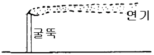
- 대기가 매우 안정한 상태일때 아침과 새벽에 잘 발생한다.
- 고기압 구역에서 하늘이 맑고 바람이 약하면 지표로부터 열방출이 커서 한밤으로부터 아침까지 복사역전층이 생길때에 발생되는 연기모양이다.
- 굴뚝상단의 일정높이에 역전층이 존재하고, 그하층에도 역전층이 존재하는 때에 관찰되며, 이러한 현상은 하루 중 30분이상 지속되지 않는다.
- 이 상태에서는 연기의 수직방향 분산은 최소가 되고, 풍향에 수직되는 수평방향의 분산도 매우 적다.
(정답률: 100%)
7. 기온의 연직분포가 다음 그림과 같을 때, 굴뚝에서 발생되는 연기형태는?
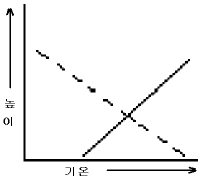
- Looping
- Fanning
- Fumigation
- Trapping
(정답률: 59%)
8. 다음 중 염화수소 또는 염소 발생 가능성이 가장 적은 업종은?
- 소오다 공업
- 플라스틱 공업
- 활성탄 제조업
- 시멘트 제조업
(정답률: 79%)
9. 일반 실내공기오염(indoor air pollution)물질로서 가장 거리가 먼것은?
- 휘발성유기화합물(VOC)
- 석면(asbestos)
- 포름알데이히드(HCHO)
- 염화비닐(vinyl chloride)
(정답률: 85%)
10. 현재 대기중 이산화탄소(CO2)의 농도는?
- 약 170ppm
- 약 370ppm
- 약 570ppm
- 약 770ppm
(정답률: 79%)
11. 질소산화물(NOx)에 관한 다음 설명 중 옳지 않은 것은?
- 연소 시에 주로 배출되며 탄화수소와 함께 태양광선에 의한 광화학 스모 그를 생성한다.
- 혈 중 헤모글로빈과 결합하여 메트헤모글로빈을 형성함으로써 산소전달을 방해한다.
- 직접적으로 눈에 대한 자극성이 강한 오염물질로 기관지염, 폐기종 및 폐렴 등을 일으키며 천식까지 진행된다.
- NO의 혈중 헤모글로빈과의 결합력은 CO보다 더 강하다.
(정답률: 74%)
12. 광화학 스모그를 설명하기 위한 반응식으로 NOx의 광화학반응이 다음과 같다고 할 대, 식 ④ 의 ( )에 들어갈 생성물질만으로 옳게 나열한 것은?
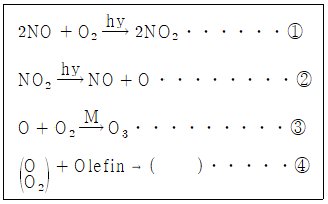
- PAN , NO2, Aldenhyde
- PBzN , HC , CO
- Aldenhyde, CO ,Ketone
- Oxidants, Paraffin , CO2
(정답률: 70%)
13. 대기의 수직온도 분포에 따른 각 대기권의 특징으로 옳지 않은 것은?
- 대류권 - 대류권의 하부 1-2km 까지를 대기경계층이라 하고, 이 대기경계층의 상층은 지표면의 영향을 직접 받지 않으므로 자유대기라고도 한다.
- 성층권- 고도에 따라 온도가 상승하는 이유는 성층권의 오존이 태양광선중의 자외선을 흡수하기 때문이다.
- 중간권 - 고도에 따라 온도가 낮아지며, 지구 대기층 중에서 가장 기온이 낮은 구역이 분포한다.
- 열권 - 고도 80km 이상인 층이며, 파장 약 0.1㎛이상의 자외선을 방출하고, 또한 흡수하는 에너지도 많아 열용량이 크기 때문에 온도는 매우 높게 된다.
(정답률: 69%)
14. 광화학반응에 관한 다음 설명 중 옳지 않은 것은?
- 대류권에서 광화학 대기오염에 영향을 미치는 대기오염상 중요한 물질은 900nm 이상의 빛을 흡수하는 물질이다.
- 오존은 200-320nm 의 파장에서 강한 흡수가, 450-700nm 에서는 약한 흡수가 있다.
- 광화학 스모그는 맑은 날 자외선의 강도가 클수록 잘 발생된다.
- NO2는 도시 대기오염물 중에서 가장 중요한 태양빛 흡수 기체라 할 수 있다.
(정답률: 72%)
15. 유효굴뚝높이 100m 정도에서 확산계수가 Ky= Kz= 0.1이고, 풍속 U=5m/sec이다. 지표면에서의 대기오염농도가 최대가 되는 착지거리는 얼마인가? (단, 대기상태는 중립이며, 안정도계수(n)= 0.25이다.)
- 5.6m
- 1000m
- 193.1m
- 2682.7m
(정답률: 73%)
16. 60m 높이의 연돌에서 배출되는 가스의 평균온도가 250℃이고, 대기의 온도가 25℃일대, 이 굴뚝의 통풍력은? (단, 표준상태의 가스와 공기의 비중량은 1.3kg/Nm3이고 굴뚝 안에서의 마찰손실은 무시함)
- 30.7mmH2O
- 20.5mmH2O
- 15.8mmH2O
- 12.4mmH2O
(정답률: 62%)
17. 지표부근의 대기성분의 부피비율(농도)이 큰 것부터 순서대로 알맞게 나열 된 것은? (단, N2, O2 성분은 생략)
- Ar - CO2 - CH4 - H2
- Ar - CO2 -H2 - CH4
- Ar - CO2 - He - Ne
- Ar - CO2 - Ne - He
(정답률: 82%)
18. 실내공기 오염물질인 “라돈” 에 관한 설명으로 옳지 않은 것은?
- 주기율표에서 원자번호가 238번으로 화학저으로 활성이 큰 물질이며, 흙속에서 방사선 붕괴를 일으킨다.
- 무색, 무취의 기체로 액화되어도 색을 띠지 않는 물질이다.
- 반감기는 3.8일로 라듐이 핵분열할 때 생성되는 물질이다.
- 자연계에 널리 존재하며, 주로 건축자재를 통하여 인체에 영향을 미치고 있다.
(정답률: 71%)
19. 다음 중 황화수소의 발생과 가장 관련이 깊은 업종은?
- 석유정제 ,석탄건류, 가스공업
- 비로제조, 표백, 색소제조공업
- 알루미늄, 요업, 인산비료공업
- 피혁, 합성수지, 프로마린 제조공업
(정답률: 67%)
20. 실제굴뚝높이가 50m, 굴뚝내경 5m, 배출가스의 분출속도가 12m/s, 굴뚝주위의 풍속이 4m/s라고 할때, 유효굴뚝의 높이는? (단, H = 1.5×D×(
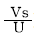
)이다.)- 22.5m
- 52.5m
- 72.5m
- 82.5m
(정답률: 83%)
2과목: 연소공학
21. 매연 발생에 관한 다음 설명 중 옳지 않은 것은?
- -C-C- 의 탄소결합을 절단하기 보다는 탈수소가 쉬운 쪽이 매연이 생기기 쉽다.
- 연료의 C/H 의 비율이 작을 수록 매연이 생기기 쉽다.
- 탈수소, 중합 및 고리화합물 등과 같이 반응이 일어나기 쉬운 탄화수소일수록 매연이 잘 생긴다.
- 분해하기 쉽거나 산화하기 쉬운 탄화수소는 매연발생이 적다.
(정답률: 86%)
22. 저위발열량이 3500kcal/Nm3인 가스 연료의 이론연소온도는 몇 ℃인가? (단, 이론연소가스량 10Nm3/Nm3,기준온도 15℃ 연료연소가스의 평균정압비열 : 0.35kcal/Nm3ㆍ℃ 공기는 예열되지 않으며, 연소가스는 해리되지 않는 것으로 한다.)
- 1015℃
- 1215℃
- 1415℃
- 1615℃
(정답률: 74%)
23. Thermal NOx를 대상으로 한 저 NOx 연소법으로 가장 거리가 먼것은?
- 배기가스 재순환
- 연료대체
- 희박예혼합연소
- 수분사와 수중기분사
(정답률: 71%)
24. 석유류의 비중이 커질때의 특성으로 거리가 먼 것은?
- 탄수소비(C/H)가 커진다
- 발열량은 감소한다.
- 화염의 휘도가 작아진다
- 착화점이 높아진다.
(정답률: 73%)
25. 중유의 원소조성은 C: 88%, H: 12%이다. 이 중유를 완전연소 시킨 결과, 중유 1kg당 건조 배가가스량이 15.8Nm3이었다면, 건조 배기가스 중의 CO2농도(V/V%)?
- 10.4%
- 13.1%
- 16.8%
- 19.5%
(정답률: 82%)
26. 기체연료에 관한 다음 설명으로 거리가 먼 것은?
- 연료 속의 유황함유량이 적어 연소 배기가스 중 SO2발생량이 매우 적다.
- 다른 연료에 비해 저장이 곤란하며, 공기와 혼합해서 점화하면 폭발 등의 위험도 있다.
- 메탄을 주성분으로 하는 천연가스를 1기압하에서 -168℃ 정도로 냉각하여 액화시킨 연료를 LNG라 한다.
- 발생로가스란 코크스나 석탄을 불완전 연소해서 얻는 가스로 주성분은 CH4와 H2이다.
(정답률: 62%)
27. 메탄의 고위발열량이 9000kcal/Sm3이라면 저위발열량(kcal/Sm3)은?
- 8740
- 8340
- 8040
- 7740
(정답률: 87%)
28. 프로판(C3H8)을 완전연소 하였을 때, 건연소가스 중의 CO2가 8%(V/V%)이었다. 공기 과잉계수 m은 얼마인가?
- 1.32
- 1.43
- 1.52
- 1.66
(정답률: 60%)
29. 3000kg 의 석탄이 완전 연소하는데 소요되는 공기량은? (단, 석탄은 모두 탄소로 구성되어 있다고 가정한다)
- 약 25000kg
- 약 35000kg
- 약 45000kg
- 약 65000kg
(정답률: 58%)
30. 다음 각 종 연료성분의 완전연소 시 단위 체적당 고위발열량(kcal/Sm3)의 크기 순서로 옳은 것은?
- 일산화탄소 ＞ 메탄 ＞ 프로판 ＞ 부탄
- 메탄 ＞ 일산화탄소 ＞ 프로판 ＞ 부탄
- 부탄 ＞ 프로판 ＞ 메탄 ＞ 일산화탄소
- 부탄 ＞ 일산화탄소 ＞ 프로판 ＞ 메탄
(정답률: 77%)
31. 유동층연소 (fluidized bed combustion) 에 관한 설명으로 가장 거리가 먼 것은?
- 유동매체는 불활성이고, 열충격에 강하며, 융점은 높으며, 미세하여야 한다.
- 투입이나 유동화를 위해 파쇄가 필요없고 , 과잉공기가 커야 완전연소 된다.
- 유동매체의 열용량이 커서 약상, 기상, 및 고형 폐기물의 전소 및 혼소가 가능하다.
- 일반 소각로에서 소각이 어려운 난연성 폐기물의 소각에 적합하며, 특히 폐유, 폐윤활유 등의 소각에 탁월하다.
(정답률: 63%)
32. 다음 중 저온부식의 원인과 대책에 관한 설명으로 가장 거리가 먼것은?
- 250℃ 이상의 전열면(傳熱面)에 응축하는 황산, 질산, 염산 등에 의하여 발생된다.
- 예열공기를 사용하거나 보온시공을 한다.
- 저온부식이 일어날 수 있는 금속표면을 피복을 한다.
- 연소가스 온도를 산노점 온도보다 높게 유지해야 한다.
(정답률: 65%)
33. 연소가스 중의 수분을 측정하였더니 건조가스 1Sm3당 150g 이었다. 이 건조 가스에 대한 수증기의 용량비(V/V%)는?
- 12.4%
- 18.7%
- 20.4%
- 24.8%
(정답률: 55%)
34. 기체연료 중 연소하여 수분을 생성하는 H2와 CxHy연소반응의 발열량 산출식에서 아래의 480이 의미하는 것은?
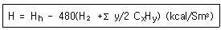
- H2O 1kg의 증발잠열
- H2 1kg의 증발잠열
- H2O 1Sm3의 증발잠열
- H2 1Sm3의 증발잠열
(정답률: 86%)
35. 액체연료의 연소장치 중 회전식 버너에 관한 설명으로 가장 거리가 먼 것은?
- 유압식버너에 비하여 연료유의 분무화 입경이 비교적 크다.
- 연로유는 0.5kg/cm2정도 가압하며 공급한다.
- 유량조절 범위가 1:5 정도 , 분무각도가 40-80℃이다.
- 연료유 분사유량은 벨트식이 1000L/hr이하, 직결식이 2700L/hr이하이다.
(정답률: 77%)
36. 화염이 길고, 그울음이 발생하기 쉬운 반면, 역화(back fire)의 위험이 없으며, 공기와 가스를 예열할 수 있는 연소방식은?
- 예혼합연소
- 확산연소
- 플라즈마연소
- 컴팩트연소
(정답률: 92%)
37. CmHn의 분자식을 가진 탄화수소가스 1Nm3을 연소 할때 소요되는 이론산소량(Nm3)은?
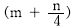
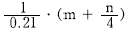
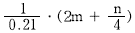
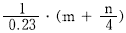
`
(정답률: 64%)
38. 단위 연료당 이론 공기량(부피비)이 가장 큰 것은?
- 에탄
- 메탄
- 프로필렌
- 아세틸렌
(정답률: 알수없음)
39. 연료유를 미립화해서 공기와 혼합하여 단시간에 완전연소를 시키는 유류연소버너가 갖추어야 할 조건으로 가장 거리가 먼 것은?
- 넓은 부하범위에 걸쳐 기름의 미립화가 가능할 것
- 재를 제거하기 위한 장치가 있을 것
- 소음 발생이 적을 것
- 점도가 높은 기름도 적은 동력비로서 미립화가 가능할 것
(정답률: 71%)
40. 착화온도에 관한 다음 설명 중 옳지 않은 것은?
- 반응활성도가 클수록 낮아진다.
- 분자구조가 간단할수록 높아진다
- 산소농도가 클수록 낮아진다.
- 발열량이 낮을수록 낮아진다.
(정답률: 50%)
3과목: 대기오염 방지기술
41. 유입구농도가 3g/Nm3,처리가스량이 2000Nm3/min인 집진장치의 처리효율이 95%라면 하루에 포집된 먼지의 양은?
- 8640 kg/day
- 8208 kg/day
- 6840 kg/day
- 5726 kg/day
(정답률: 62%)
42. 사이클론에 관한 설명으로 가장 거리가 먼 것은?
- 접선유입식 사이클론의 유입가스속도는 3-6m/sec범위로, 이 범위 속도가 집진효율에 미치는 영향은 크다.
- 반전형은 입구유속이 10m/sec전후이며, 접선유입식에 비해 압력손실이 적다.
- 멀티사이클론은 처리가스량이 많고 높은 집진효율을 필요로 하는 경우에 사용한다.
- 반전형은 blow down은 필요없고, 함진가스 입구의 안내익(aerodynamic vane)에 따라 집진효울이 달라진다.
(정답률: 72%)
43. 어떤 집진장치의 입구와 출구에서 함진가스 중 분진의 농도를 측정하였더니 각각 15g/Sm3, 0.3g/Sm3이었고, 또 입구와 출구에서 측정한 분진시료 중 0-5㎛의 중량백분율이 각각 10%, 60% 이었다면 이 집진장치의 0-5㎛ 입경범위의 시료분진에 대한 부분집진율(%)은?
- 84
- 86
- 88
- 90
(정답률: 50%)
44. 흡착법에서 사용되는 흡착제에 관한 설명으로 옳지 않은 것은?
- 표면적이라 함은 흡착제 내부의 기공에서의 면적을 말한다.
- 비표면적과 친화력이 크면 클수록 흡착효과는 커진다.
- 보오크사이트는 가성소다용액 중의 불순물 제거에 주로 사용된다.
- 활성탄은 유기용제회수, 악취제거, 가스정화 등에 주로 사용된다.
(정답률: 50%)
45. 분무탑(spray tower)에 관한 다음 설명 중 옳지 않은 것은?
- 유해가스 속도가 느릴 경우를 제외하고는 비말동반의 위험이 있다.
- 액분산형 흡수장치에 해당한다.
- 충전탑에 비하여 설비비 및 유지비가 적게 된다.
- 충전탑에 비해 압력손실이 큰다.
(정답률: 60%)
46. 높이 7m, 폭 10m, 길이 15m의 중력집진장치를 이용하여 처리가스를 4m3/sec유량으로 비중이 1.5인 먼지를 처리하고 있다. 이 집진기가 포집할 수 있는 최소입자의 크기(dmin)는? ( 단, 온도는 25℃, 점성계수는 1.85×10-5kg/mㆍs이며 공기의 밀도는 무시한다)
- 약 32㎛
- 약 25㎛
- 약 17㎛
- 약 12㎛
(정답률: 58%)
47. 후드의 제어속도(Control Velocity)에 관한 설명으로 옳은 것은?
- 확산조건 ,오염원의 주변기류에는 영향이 크지 않다.
- 유해물질의 발생조건이 조용한 대기 중 거의 속도가 없는 상태로 비산하는 경우(가스, 흄 등)의 제어속도 범위는 1.5-2.5m/sec정도이다.
- 유해물질의 발생조건이 빠른 공기의 움직임이 있는 곳에서 활발히 비산하는 경우(분쇄기)의 제어속도 범위는 15-25m/sec정도이다.
- 오염물질의 발생속도를 이겨내고 오염물질을 후드내로 흡인하는데 필요한 최소의 기류속도를 말한다.
(정답률: 70%)
48. 450ppm의 NO를 함유하는 450000Nm3/h를 암모니아 선택적 접촉환원법으로 배연탈질 할때 요구되는 암모니아의 양(Nm3)은? (단, 산소가 공존되는 상태 기준임)
- 910.5
- 4⑤.5
- 202.5
- 101.5
(정답률: 79%)
49. 처리용량이 크며, 분진의 크기가 0.1-0.9㎛인 것에 대해서도 높은 집진 효율을 가지며, 습식또는 건식으로도 제진할 수 있고, 압력손실이 매우 적고, 유지비도 적게 소요될 뿐 아니라 고온의 가스도 처리 가능한 집진장치는?
- 전기집진장치
- 원심력집진장치
- 세정집친장치
- 여과집진장치
(정답률: 93%)
50. 중력식 집진장치의 집진을 향상조건에 관한 다음 설명중 옳지 않은 것은?
- 침강실 처리가스의 속도가 작을 수록 미립자가 포집된다.
- 침강실 내의 배기가스 기류는 균일해야 한다.
- 침강실의 높이가 높고, 중력장의 길이가 짧을수록 집진율은 높아진다.
- 다단일 경우네는 단수가 증가할수록 집진률은 커지나, 압력손실도 증가한다.
(정답률: 69%)
51. 벤츄리스크러버(venturi scrubber)에 관한 설명으로 가장 거리가 먼것은?
- 가압수식 중에서 집진율이 가장 높아 대단히 광범위하게 사용되며, 소형으로 대용량의 가스처리가 가능하다.
- 액가스비는 보통 0.3-1.5L/m3정도, 압력손실은 300-800mmH2O 전 후 이다
- 물방울 입경과 먼지 입경의 비는 충돌효율 면에서 10:1전후가 좋다.
- 목부의 처리가스 속도는 보통 60-90m/s이다.
(정답률: 45%)
52. 충전탑에서 HF를 함유한 유해배출가스를 처리하고자한다. 이동단위높이 HOG=1.2m 인 탑에서 배기가스 중의 HF를 수산화나트륨 수용액에 흡수시켜 제거하는 데 유해가스제거율을 98%로 하기 위한 탑의 높이(m)는? ( 단, 이동단위수 NOG= ln
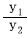
로 계산되고, y1, y2는 흡수탑입구와 출구에서의 유해가스의 몰분율이다.)- 2.3
- 3.9
- 4.7
- 5.4
(정답률: 43%)
53. 다음 전기집진장치 내의 입자에 작용하는 전기력 중 가장 지배적으로 작용하는 힘은?
- 전계강도에 의한 힘
- 대전입자의 하천에 의한 쿨롱의 힘
- 입자간의 흡인력
- 전기풍에 의한 힘
(정답률: 50%)
54. 가스흡수에서는 기-액의 접촉면적을 크게 하는 것이 필요한데 실제 유효접촉면적 a(m2/m3)의 참값을 구하기가 쉽지 않으므로, 액상 총괄물질이동계수 KL과의 곱인 KLㆍa를 계수로 사용한다. 이 계수를 무엇이라 하는가?
- 액체용량계수
- 액체유효면적계수
- 액체전달계수
- 액체분배계수
(정답률: 24%)
55. 유해가스를 제거하기 위한 “연소법”에 관한 설명중 옳지 않은 것은?
- 배기가스의 양이 비교적 많고 오염가스 농도가 적을때 주로 사용된다.
- 연소장치의 설계 및 조업을 적절히 함으로써 가연성 오염물질을 거의 완전히 제거할 수 있다.
- 배기 가스 중 가연성 오염물질의 성분농도가 매우 낮아서 직접연소가 곤란할 때에는 가열연소 시킬 수 있다.
- 촉매연소에서는 촉매의 노화를 방지하기 위해 촉매량을 감소시키고 , 예열 온도는 낮춘다.
(정답률: 47%)
56. 헨리의 법칙에 관한 다음 설명 중 옳지 않은 것은?
- 비교적 용해도가 적은 기체에 적용된다.
- 헨리상수의 단위는 atm/m3ㆍkmol이다.
- 일정온도에서 특정 유해가스 압력은 옹해가스의 액중농도에 비례한다는 법칙이다.
- 헨리상수는 온도에 따라 변하며, 온도는 높을수록 용해도는 적을수록 커진다.
(정답률: 47%)
57. 가스중의 불화수소를 수산화나트륨용액과 향류를 접톡시켜 90%흡수시키는 충전탑의 흡수율을 99.9%로 향상시키고자 한다. 이때 충전층의 높이는? (단, 흡수액상의 불화수소의 평형분압은 0으로 한다.)
- 81배 높아져야 한다.
- 27배 높아져야 한다.
- 9배 높아져야 한다.
- 3배 높아져야 한다.
(정답률: 43%)
58. 유해가스 종류별 처리제 및 그 생성물과의 연결로 옳지 않은 것은?
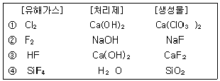
- ①
- ②
- ③
- ④
(정답률: 44%)
59. 염화수소의 함량이 0.85(V/V)인 배출가스 4500Sm3/hr를 수산화칼슘으로 처리하여 염화수소를 완전히 제거할 때 이론적으로 필요한 수산화칼슘의 양(kg/hr)?
- 약 63kg/hr
- 약 58kg/hr
- 약 51kg/hr
- 약 46kg/hr
(정답률: 39%)
60. 유량이 150m3/min 인 배출가스를 직경 20cm 인 원통형 백필터(bag filter) 40개로 처리하려고 한다. 여과속도를 1.5cm/sec로 유지하려면 백필터의 유효높이(m)는?
- 4.63
- 5.63
- 6.63
- 7.63
(정답률: 44%)
4과목: 대기오염 공정시험기준(방법)
61. 환경기준시험을 위한 시료채취위치 선정기준을 설명한 것 중 옳지 않은 것은?
- 주위에 건물 등이 밀집되어 있을 때는 건물 바깥벽으로부터 적어도 1.5m 이상 떨어진 곳을 선정한다.
- 시료의 채취높이는 그 부근의 평균오염도를 나타낼 수 있는 곳으로서 가능한 1.5-10m 범위로 한다.
- 주위에 장애물이 있을 경우에는 채취 위치로부터 장애물까지의 거리가 그 장애물 높이의 1.5배 이상이 되도록 한다.
- 주위에 장애물들이 있을 경우에는 채취점과 장애물 상단을 연결하는 직선이 수평선과 이루는 각도가 30° 이하되는 곳을 선정한다.
(정답률: 53%)
62. 환경 대기 중 석면농도 측정에 관한 설명으로 옳지 않은 것은?
- 석면포집에 사용하는 필터는 셀룰로오즈 에스테르계재질의 멤브레인 필터이다.
- 농도표시는 표준상태의 기체 1L 중에 함유된 석면섬유의 개수로 한다.
- 시료채취는 원칙적으로 채취지점의 지상 1.5m 되는 위치에서 10L/min흡인량으로 4시간이상 채취한다.
- 흡인펌프는 1L/min-20L/min로 공기를 흡인할 수 있는 로타리펌프 또는 다이어프램 펌프를 사용한다.
(정답률: 43%)
63. 소각로, 소각시설 및 그 밖의 배출원에서 배출되는 입자상 및 가스상 수은 (Hg)의 측정 분석방법 중 환원기화 원자흡광광도법에 관한 설명으로 옳지 않은 것은?
- 배출원에서 등속으로 흡인된 입자상과 가스상 수은은 흡수액인 산성 과망간산칼륨 용액에 채취된다.
- 측정범위는 0.001 ~ 0.020㎍/mL이며, 감도는 원자흡광광도계에 따라 다르다.
- Hg2+형태로 채취한 수은을 Hg0형태로 환원시켜서 측정한다.
- 시료채취시 배출가스 중에 존재하는 산화 유기물질은 수은의 채취를 방해 할수 있다.
(정답률: 43%)
64. 굴뚝 배출가스 중 수분측정을 위하여 흡습제에 10L의 시료를 흡인하여 유입시킨 결과 흡습제의 중량 증가가 0.8500g이었다. 이 배출가스 중의 수증기 부피백분율은? (단, 건식가스미터의 흡인가스온도 : 27℃ 가스미터에서의 가스게이지압 + 대기압: 760mmHg)
- 10.4%
- 9.5%
- 7.3%
- 5.5%
(정답률: 42%)
65. 굴뚝에서 배출되는 가스 중의 일산화탄소를 분석하는 방법으로 옳지 않은 것은?
- 흡광광도법
- 정전위전해법
- 비분산적외선분석법
- 가스크로마토그래프법
(정답률: 57%)
66. 굴뚝 배출가스 중 산소측정분석에 사용되는 화학분석법(오르자트분석법)에 관한 설명으로 옳지 않은 것은?
- 흡수의 순서는 CO2, O2 이다.
- CO2의 흡수액에는 수산화칼륨의 용액을 사용한다.
- 산소흡수액을 만들 때에는 되도록 공기와의 접촉을 피한다.
- 산소흡수액은 물과 수산화나트륨을 녹인 용액에 피로칼롤을 녹인 용액으로 한다.
(정답률: 65%)
67. 화학반응 등에 수반하여 굴뚝 등에서 배출되는 가스중의 브롬화합물을 분석하는 방법 중 흡광광도법(티오시안 제2수은법)에 관한 설명으로 옳지 않은 것은?
- 흡수액은 수산화나트륨 0.4g을 물에 녹여 100ml로 한다.
- 브롬이온표준원액 1ml는 브롬이온 1mg을 포함한다.
- 과망간산칼륨(0.32W/V%)용액은 과망간산칼륨 0.79g을 물에 녹여 250ml 메스플라스크에 넣고 물로 표선까지 채운다.
- 황산 제2철 암모늄 용액은 황산 제2철 암모늄 3g을 물 100ml에 녹여 갈색병에 보관한다.
(정답률: 64%)
68. 다음 중 아래와 같은 검량선을 가지면서 동일 조건하에 시료를 도입하여 크로마토그램을 기록하고 피크넓이(또는 피크의 높이)로부터 검량선에 따라 분석하며, 전체 측정조작을 엄밀하게 일정 조건하에서 할 필요가 있을 때 사용하는 크로마토그램 분석방법은?
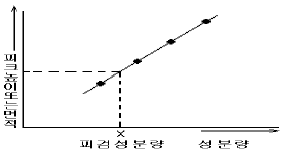
- 넓이백분율법
- 피검성분추가법
- 절대검량선법
- 내부표준검량선법
(정답률: 42%)
69. 굴뚝 배출가스 중의 먼지를 연속적으로 자동측정하는 광산란적분법의 장치 구성으로 가장 거리가 먼 것은?
- 앰프부
- 검출부
- 기록부
- 수신부
(정답률: 42%)
70. 다음 굴뚝에서 배출되는 중금속 중 분석시료용액의 제조방법이 다른 하나는?
- Pb
- Cd
- Cu
- Cr
(정답률: 알수없음)
71. 환경대기 중의 탄화수소 농도를 측정하기 위한 시험방법 중 주시험법인 것은?
- 총탄화수소 측정법
- 비메탄 탄화수소 측정법
- 활성 탄화수소 측정법
- 비활성 탄화수소 측정법
(정답률: 50%)
72. 배출허용기준 중 표준산소농도를 적용받는 항목의 오염물질 농도량 보정식으로 옳은 것은? (단, C : 오염물질 농도(mg/Sm3 또는 ppm, Ca : 실측오염물질 농도(mg/Sm3 또는 ppm, Oa : 실측산소농도(%), Os : 표준산소농도(%))
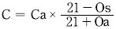
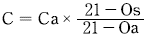
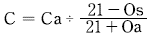
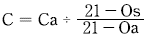
(정답률: 50%)
73. 환경대기 중에 있는 아황산가스 농도를 자동연속측정법으로 분석하고자 한다. 옳지 않은 것은?
- 흡광차분광법
- 용액 전도율법
- 적외선형광법
- 불꽃광도법
(정답률: 42%)
74. 환경기준시험방법에 의해 대기중의 가스상 물질을 용매포집법으로 채취할 경우 채취장치의 배열 순서로 옳은 것은?
- 흡수관 - 흡입펌프 - 유량계 - 트랩
- 흡수관 - 트랩 - 흡입펌프 - 유량계
- 흡수관 - 흡입펌프 - 트랩 - 유량계
- 흡수관 - 유량계 - 트랩 - 흡입펌프
(정답률: 34%)
75. 굴뚝 등에서 배출되는 배출가스 중의 무기 불소화합물을 불소 이온으로 분석하는 방법에 관한 설명으로 옳지 않은 것은?
- 시료채취시 시료중에 먼지가 혼입되는 것을 막기 위해 시료 채취관의 적당한 곳에 사불화에틸렌제 등 불소화합물의 영향을 받지 않는 여과재를 넣는다.
- 시료중의 무기 불소 화합물과 수분이 응축하는 것을 막기 위하여 시료 채취관 및 시료 채취간에서부터 흡수병까지 사이를 100℃ 이상으로 가열해준다.
- 시료채취관은 배출가스중의 무기 불소화합물에 의해 부식되지 않는 불소수지관, 구리관 등을 사용한다.
- 시료 채취관에서부터 흡수병까지의 가열부분에 있는 접속부는 갈아 맞춘 것으로 하고, 경질유리관이나 스텐레스관, 사불화에틸렌수지관, 불소고무관, 실리콘고무관 등으로 한다.
(정답률: 50%)
76. 다이옥신류 측정시 시료채취용 내부표준 물질로 사용되는 물질은? (단, 가스크로마토그래프/질량분석계(GC/MS)에 의한 분석방법 기준)
- 37Cl4 - 2,3,7,8 - T4COD
- 13Cl12 - 2,3,7,8 - T4COD
- 37Cl4 - 2,3,7,8 - T4COF
- 37Cl12 - 2,3,7,8 - T4COF
(정답률: 47%)
77. 다음 중 원자흡광광도법에 사용되는 분석장치인 것은?
- Packing Material
- Detector Oven
- Nebulizer-Chamber
- Electron Capture Detector
(정답률: 47%)
78. 다음 그림은 원자흡광광도법에 의한 시료 중의 분석원소농도를 구하는 방법이다. 어떤 정량법인가?
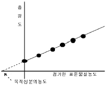
- 검량선법
- 절대검량선법
- 표준첨가법
- 내부표준법
(정답률: 44%)
79. 어느 보일러 굴뚝내의 배출가스의 밀도가 1.2kg/m3이고, 피토우관에서의 동압이0.2inH2O일때, 굴뚝 배출가스의 유속은? (단, 피토우관 계수 : 0.84)
- 5.60 m/sec
- 7.65m/sec
- 8.38 m/sec
- 9.10m/sec
(정답률: 46%)
80. 다음 가스크로마토 그래프의 장치구성 중 가열장치가 피룡한 부분과 그 이유로 옳게 연결된 것은?
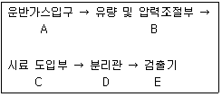
- A,B,C - 운반가스 및 시료의 응축을 방지하기 위해
- A,C,D - 운반가스 응축을 방지하고 시료를 기화하기 위해
- C,D,E - 시료를 기화시키고, 기화된 시료의 응축 및 응결을 방지하기 위해
- B,C,D - 운반가스 유량의 적절한 조절과 분리관내 충진제의 흡착 및 흡수능을 높이기 위해
(정답률: 40%)
5과목: 대기환경관계법규
81. 다음은 대기오염경보단계중 “주의보” 발령기준에 관한 사항이다. ( )안에 알맞은 것은?
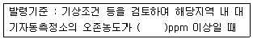
- 0.12
- 0.15
- 0.3
- 0.5
(정답률: 55%)
82. 대기환경보전법규상 대기오염 배출시설로부터 배출되는 오염물질을 배출허용기준 이하로 배출하기 위하여 설치하는 대기오염 방지시설로 가장 적합한 것은)?단, 방지시설에는 오염물질을 포집 및 이송을 위한 부대기계ㆍ기구류 등을 포함한다.)
- 증류시설
- 포기시설
- 농축시설
- 촉매반응을 이용하는 시설
(정답률: 34%)
83. 대기환경보전법령에 의거, 환경기술인을 바꾸어 임명할 경우 그 사유가 발생한 날로 최대 며칠이내에 신고하여 하는가?
- 당일
- 3일
- 5일
- 10일
(정답률: 50%)
84. 배출시설 가동시에 방지시설을 가동하지 아니하거나 오염도를 낮추기 위하여 배출시설에서 배출되는 오염물질에 공기를 섞어 배출하는 행위에 대한 1차 행정처분 기준은?
- 조업정지 30일
- 조업정지 20일
- 조업정지 10일
- 경고
(정답률: 56%)
85. 대기환경규제지역을 관할하는 시ㆍ도지사는 당해 지역이 대기환경규제지역으로 지정ㆍ고시된 후 최대 몇 년 이내에 당해 지역의 환경기준을 달성ㆍ유지하기 위한 계획을 수립ㆍ시행 하여야 하는가?
- 5년
- 3년
- 2년
- 1년
(정답률: 34%)
86. 자가방지시설을 설계시공하고자 하는 경우, 시ㆍ도지사에게 제출해야 되는 서류로 가장 거리가 먼 것은?
- 원료(연료포함)사용량, 제품생산량 및 오염물질 등의 배출량을 예측한 명세서
- 공정도
- 기술능력현황을 기재한 서류
- 배출시설 설치도면 및 종업원 수
(정답률: 54%)
87. 대기환경보전법규에 명시된 환경기술인의 교육사항에 관한 규정 중 ( )안에 들어갈 말로 옳은 것은?
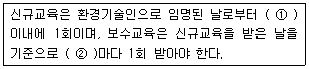
- ① 3월, ② 1년
- ① 6월, ② 1년
- ① 1년, ② 3년
- ① 1년, ② 5년
(정답률: 58%)
88. 악취방지법규에 의거 악취배출시설의 변경신고를 하영야 하는 경우로 가장 거리가 먼 것은?
- 악취배출시설을 폐쇄하는 경우
- 사업장 명칭을 변경하는 경우
- 대표자를 변경하는 경우
- 악취배출시설 또는 악취방지시설을 동종ㆍ동일 규모의 시설로 대체하는 경우
(정답률: 54%)
89. 대기환경보전법상 용어의 정의로 옳지 않은 것은?
- 대기오염물질이라 함은 대기오염의 원인이 되는 가스ㆍ입자상물질 및 악취물질로서 대통령령으로 정한 것을 말한다.
- 기후ㆍ생태계변화 유발물질이라 함은 지구온난화 등으로 생태계의 변화를 가져올 수 있는 기체상 물질로서 온실가스 및 환경부령이 정하는 것을 말한다.
- 매연이라 함은 연소시에 발생하는 유리탄소를 주로 하는 미세한 입자상물질을 말한다.
- 검댕이라 함은 연소시에 발생하는 유리탄소가 응결하여 입자의 지르이 1미크론 이상이 되는 입자상물질을 말한다.
(정답률: 50%)
90. 악취방지법에 의거 환경부령이 정하는 악취를 발생시키는 물질을 불법 소각한 자에 대한 벌칙기준은?
- 50만원 이하의 벌금
- 100만원 이하의 벌금
- 200만원 이하의 벌금
- 300만원 이하의 벌금
(정답률: 45%)
91. 대기환경보전법규에 의한 자가측정대상ㆍ항목 및 방법에 대한 기준으로 옳지 않은 것은?
- 먼지ㆍ황산화물 및 질소산화물의 연간 발생량 합계가 80톤 이상인 시설은 주 1회 이상 측정한다.
- 먼지ㆍ황산화물 및 질소산화물의 연간 발생량 합계가 20톤 이상 80톤 미만인 시설은 월 1회 이상 측정한다.
- 먼지ㆍ황산화물 및 질소산화물의 연간 발생량 합계가 10톤 이상 20톤 미만인 시설은 매 2월 1회 이상 측정한다.
- 매 2월 1회 이하 측정하여야 할 시설중 특정유해물질이 포함된 오염물질을 배출하는 경우에는 시설의 규모에 관계없이 월 2회 이상 측정하여야 한다.
(정답률: 43%)
92. 환경정책기본법상 시ㆍ도지사가 지역환경의 특수성을 고려하여 규정에 의한 기준보다 확대ㆍ강화된 별도의 환경기준을 설정할 경우, 누구에게 보고하여야 하는가?
- 환경부장관
- 보건복지부장관
- 건설교통부장관
- 국무총리
(정답률: 60%)
93. 대기배출시설 설치허가를 받은 A사업장에서 먼지 30톤/년, 질소산화물 40톤/년, 일산화탄소 20톤/년의 대기오염물질이 발생된다면, 사업장 분류기준으로는 몇 종에 해당하는가?
- 1종 사업장
- 2종 사업장
- 3종 사업장
- 4종 사업장
(정답률: 31%)
94. 대기환경보전법상에 규정된 첨가제가 아닌 것은?
- 청정분산제
- 옥탄가 향상제
- 매연 발생제
- 세척제
(정답률: 79%)
95. 다중이용시설 등의 실내공기질 관리법령상 대통령령이 정하는 규모의 다중이용시설에 해당되지 않는 것은?
- 여객자동차터미널의 연면적 2천2백 제곱미터인 대합실
- 공항시설중 연면적 1천 1백제곱미터인 여객터미널
- 철도역사의 연면적 2천2백제곱미터인 대합실
- 모든 지하역사
(정답률: 58%)
96. 대기환경보전법령상 법규정에 의한 개선명령을 받지 아니한 사업자가환경부 장관에게 개선계획서를 제출하고 배출허용기준을 초과하여 오염물질을 배출할 수 있는 경우가 아닌것은?
- 배출시설 또는 방지시설을 개선ㆍ변경ㆍ점검 또는 보수하기 위하여 부득이한 경우
- 배출시설 또는 방지시설의 적정운영검사기간이 15일을 초과하는 경우
- 배출시설 또는 방지시설의 주요기계장치 등의 돌발적 사고로 인하여 적정 운영을 할 수 없는 경우
- 단전ㆍ단수로 배출시설 또는 방지시설을 적정운영 할 수 없는 경우
(정답률: 40%)
97. 환경부장관이 사업자에게 배출시설 및 방지시설의 부적정 운영으로 인하여 조치명령을 하는 경우, 정하는개선기간의 최대 범위는? (단, 연장기간 제외)
- 3월 범위내
- 6월 범위내
- 9월 범위내
- 12월 범위내
(정답률: 50%)
98. 대기환경보전법 시행령에 규정된 사업장별 환경기술인의 자격기준으로 옳지 않은 것은?
- 대기오염물질발생량의 합계가 연간 80톤 이상인 사업장은 1종 사업장에 해당하는 기술인을 둘 수 있다.
- 대기오염물질발생량의 합계가 연간 20톤 이상 80톤 미만인 사업장은 2종 사업장에 해당하는 기술인을 둘 수 있다.
- 전체배출시설에 대하여 방지시설 설치면제를 받은 사업장과 배출시설에서 배출되는 오염물질들을 공동방지시설에서 처리하게 하는 사업장은 5종 사업장에 해당하는 기술인을 둘 수 있다.
- 5종 사업장 중 특정대기유해물질이 포함된 오염물질을 배출하는 경우에는 4종 사업장에 해당하는 기술인을 두어야 한다.
(정답률: 36%)
99. 환경정책기본법령상 대기환경기준으로 옳지 않은 것은?
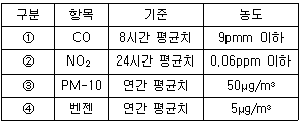
- ①
- ②
- ③
- ④
(정답률: 62%)
100. 다음은 대기환경보전법규에 규정된 현재 제작자동차의 배출가스 보증기간에 관한 사항이다. ( )안에 알맞은 것은?
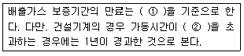
- ① 기간 또는 주행거리 중 나중 도달하는 것. ② 1000 시간
- ① 기간 또는 주행거리 중 나중 도달하는 것. ② 2000 시간
- ① 기간 또는 주행거리 중 먼저 도달하는 것. ② 1000 시간
- ① 기간 또는 주행거리 중 먼저 도달하는 것. ② 2000 시간
(정답률: 39%)
오존층은 지구 대기 중에서 오존이 높은 농도로 분포하고 있는 층으로, 대기 중의 자외선을 흡수하여 지구 상의 생명체들을 보호하는 역할을 합니다. 오존층의 두께는 돕슨(Dobson)이라는 단위로 표시되며, 오존층량은 지역에 따라 다르지만, 적도 지방에서는 약 200돕슨, 극 지방에서는 약 400돕슨 정도입니다. 오존은 성층권에서 대기 중의 산소분자가 자외선에 의해 광분해되어 생성됩니다.